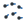
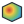
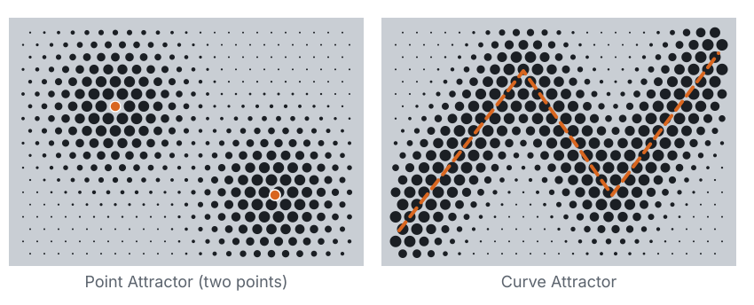
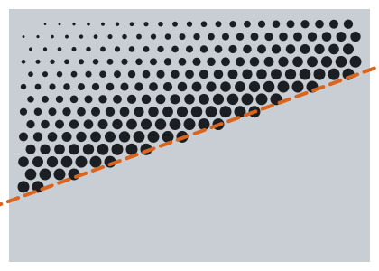
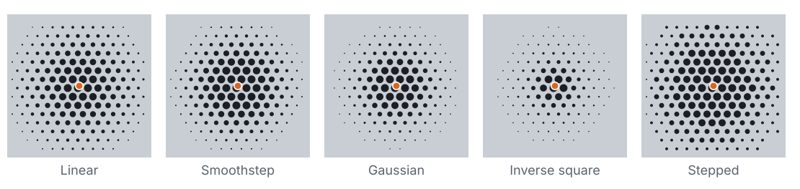
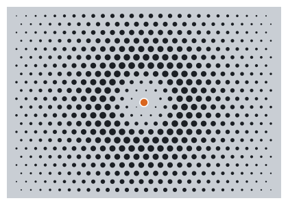
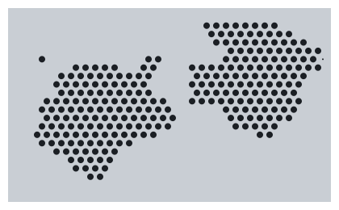
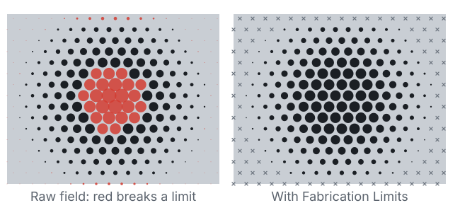
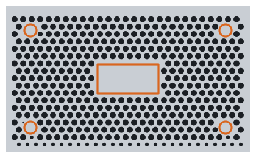
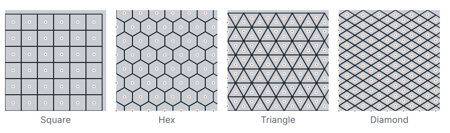

Overview
Almost every Grasshopper pattern is the same recipe: a grid of cells, one shape per cell, and a few numbers per cell such as size, rotation or depth. An attractor is a way to compute those numbers from distance. This plugin turns that recipe into a few reusable parts: a field that any pattern can read, fabrication limits that every pattern respects, and the patterns themselves. Everything is on the Patterns tab.
| Panel | Component | What it does |
|---|---|---|
| Fields | Point Attractor | Field from points: 1 at the nearest point, 0 at the radius |
| Curve Attractor | Field from curves, with the curve direction, position along it and side | |
| Combine Fields | Max, Sum, Blend, Subtract (repeller), Min or Multiply several fields | |
| Modify Field | Remap, reshape, add noise, invert or rescale a field | |
 Evaluate Field | Read a field at any points, to drive native Grasshopper geometry | |
 Field Preview | Colour a surface or mesh by the field, blue for 0 and red for 1 | |
| Fabrication | Fabrication Limits | Process presets with every limit you can override |
| Fab Check | Tests any set of cutouts: bridges, hole size, margin, keep-outs and open area | |
| Cells | Cell Grid | Square, hex, triangle and diamond cells inside a boundary |
| Perforation | Round Perforation | Round holes sized by a field and clamped to the limits |
The usual chain is Point or Curve Attractor → Round Perforation, with Fabrication Limits plugged into the pattern. Any field input also takes a plain number, and any limits input takes a number, which it reads as the material thickness.
Install
The plugin is built for Rhino 7 and Rhino 8.
- Close Rhino.
- Copy
PatternPlugin.ghato the Grasshopper Libraries folder. In Grasshopper this is File › Special Folders › Components Folder. On Windows it is%APPDATA%\Grasshopper\Libraries\. - On Windows, right-click the file, choose Properties, and tick Unblock if it shows.
- Start Rhino and run
Grasshopper. You should see a Patterns tab with four panels.
Your first perforated panel
- Draw a closed planar curve in Rhino, such as a rectangle 200 × 100, and reference it in a Curve parameter.
- Drop Round Perforation and connect the curve to Boundary. With nothing else connected you get full-size holes on a hex grid, clamped to the default limits (1.5 mm sheet).
- Add a Point parameter, set a point inside the panel, and connect it to Point Attractor → Points. Connect Point Attractor → Field to Round Perforation → Field.
- Read Report in a Panel. It says how many holes were placed, how many were clamped to the limits and how many were dropped as too small, and the open area.
| Input | Default | What it changes |
|---|---|---|
| Grid | Hex | Square or hex layout. Right-click to pick by name. |
| Pitch | 10 | Centre-to-centre spacing |
| Rotation | 0 | Grid angle in degrees |
| Diameter | 2 to 8 | Hole size at field value 0 and at field value 1 |
| Threshold | 0 | No hole where the field is below this value (step 6) |
| Keep-outs | empty | Closed curves the holes stay clear of (step 9) |
Holes are circles ready to bake and cut. Dropped shows the cells where a hole would have been smaller than the minimum feature size.
Point and curve attractors
Both attractors output a Field. Its value is 1 at the attractor and falls to 0 at Radius. With several points or curves, the closest one wins. Strength multiplies the value.

A curve attractor knows more than distance. Evaluate Field returns it all for any points:
- Direction: the curve's tangent, for rotating slats or cells along it. For points it points away from the nearest point.
- Position: 0 at the start of the curve and 1 at the end, for patterns that change along the curve.
- Side: 1 on the left of the curve and −1 on the right, looking along it with Normal pointing up.
Set the curve attractor's Side input to Left only or Right only so the pattern opens on one side of a character line and stays closed on the other.

Falloff: how the effect fades
Falloff sets the shape of the fade from the attractor to the radius. Right-click it to pick by name. Every preset reaches exactly 0 at the radius, so nothing leaks past it.

| Falloff | Looks like |
|---|---|
| Linear | An even gradient |
| Smoothstep | Soft at both ends. The default. |
| Gaussian | A tight core with a long soft tail |
| Inverse square | A sharp spike at the attractor |
| Stepped | Rings of equal size. Bands sets how many. |
Turn on Invert to make the effect strong far from the attractor. For your own fade, draw a curve that goes from top-left to bottom-right and connect it to Profile. It is read in its bounding box: x is distance from 0 to 1 and y is strength from 0 to 1. This works like Grasshopper's Graph Mapper.
Several attractors and repellers
Combine Fields takes a list of fields. Pick the Mode by name.
| Mode | Use it for |
|---|---|
| Max | Several attractors, the strongest wins |
| Sum | Effects that add up where attractors overlap |
| Blend | A weighted average, set with Weights |
| Subtract | A repeller: every field after the first pushes the effect away |
| Min, Multiply | Masks: one field limits where the other can act |

Directions follow whichever field is strongest at each point, so rotating patterns turn toward the dominant attractor.
Noise, remapping and on/off
Modify Field changes a field before a pattern reads it. The steps run top to bottom:
- Input: the range mapped to 0..1. Use 0.2 to 0.8 to make the gradient steeper.
- Reshape: a profile curve, like Falloff's Profile
- Gamma: above 1 tightens the effect around the attractor, below 1 widens it
- Noise, Noise Scale and Seed: smooth random variation that is the same every time for the same seed
- Invert, Output range and Clamp
To switch holes on and off rather than resize them, set the Diameter to a single size (for example 4 to 4) and raise Threshold on Round Perforation. Cells where the field is below it get no hole.

Fabrication limits
An attractor will happily push a hole to nothing or merge two holes into one. Fabrication Limits stops that. Plug it into a pattern's Limits input, and every hole is clamped in this order:
- Take the diameter from the field and the Diameter range.
- Shrink it so the bridge to every neighbour is at least Min Bridge.
- Shrink it to keep Edge Margin from the boundary and Min Bridge from any keep-out.
- If it is now under Min Feature, drop the hole instead of shrinking it further.

Pick a Preset and set Thickness. The other values follow from it, and any input you connect overrides just that value. Summary lists the values in use.
| Preset | Thickness means | Min bridge | Min feature |
|---|---|---|---|
| Laser sheet | Sheet thickness t | 1 × t | 0.5 × t (at least 0.5) |
| Punched sheet | Sheet thickness t | 1 × t | 1 × t |
| Waterjet | Sheet thickness t | 1.5 × t (at least 1.5) | 1.5 × t (at least 1.5) |
| CNC relief | Tool diameter | 0.5 × t (at least 1) | 1 × t |
| Injection molding | Wall thickness | 1 × t (at least 1) | 1 × t (at least 1) |
| FDM print | Nozzle diameter | 2 × t | 2 × t |
| SLA print | Smallest feature | 1 × t (at least 0.3) | 1 × t (at least 0.3) |
Check any cutout pattern
Fab Check works on any closed curves, including patterns you built by hand or with other plugins. Connect the cutouts to Openings, the panel outline to Boundary and your limits to Limits.
| Output | What it gives |
|---|---|
| Pass | True when nothing fails |
| Report | One line with the counts and the worst values |
| Min Bridge, Smallest Feature | The worst values found |
| Open Area | Open area in percent, the number airflow, acoustic and daylight targets use |
| Failing | The cutouts that break a limit, for a red preview |
| Issues | What is wrong with each cutout |
| Markers | Points at the middle of every bridge that is too thin |
Feature size is the hydraulic diameter (4 × area ÷ perimeter). It is the diameter for a circle and the side for a square, so slots and polygons are judged fairly.
Keep-outs for mounting holes and logos
Connect closed curves to Keep-outs. Holes inside them are dropped, and holes next to them shrink to keep Min Bridge clear.

For a soft solid zone instead of a hard edge, use a repeller in Combine Fields (step 5).
Drive your own patterns
The fields work with any Grasshopper definition, not only this plugin's patterns.
- Cell Grid gives square, hex, triangle or diamond cells inside a boundary, with their centres. Connect a field to get each centre's value.
- Evaluate Field gives the value, direction, position and side at any points.
- Remap the values into your own range and drive anything: scale, rotation, extrusion depth or a morph.
- Run the result through Fab Check before you cut it.

Field Preview colours a surface or mesh by any field, so you can tune the attractors before running a heavy pattern.
Roadmap
Version 0.1 has the field system, the fabrication tools and the first pattern. The other 13 families from the browser playground are coming in this order:
| Release | Families |
|---|---|
| 0.1 | Round perforation |
| Grille set | Honeycomb, Diamond mesh, Slats and louvers, Voronoi |
| Grid and packing set | Shape morph, Triangulated panels, Circle packing, Halftone |
| Tiling and line set | Jewel studs, Islamic and girih, Truchet, Flow and contour lines |
| Simulation | Reaction-diffusion |
Patterns work on flat, closed boundaries for now. Curved surfaces come with the 3D families.
Troubleshooting
| Problem | Fix |
|---|---|
| No Patterns tab | Check the .gha is in the Components folder and unblocked, then restart Rhino |
| "Boundary must be planar" | Use a flat closed curve. Project a curve onto a plane first if needed. |
| "Pitch leaves no room for a hole" | Pitch must be at least Min Bridge + Min Feature. Raise Pitch or lower the limits. |
| Many holes dropped | Raise the low end of Diameter, or pick a preset with a smaller Min Feature |
| Big holes all the same size | They are clamped by Min Bridge. Raise Pitch to let them grow. |
| Open area warning | Lower the Diameter range or raise Pitch, or override Max Open Area |
| Solve is slow | Raise Pitch, or use fewer, simpler attractor curves |